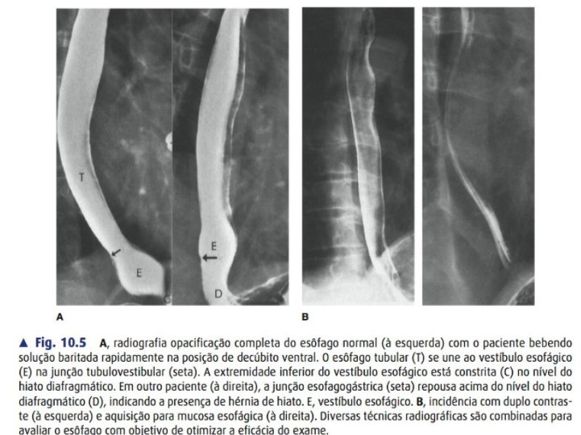

🔥 DRGE & hérnia de hiato
🤒 Típico
Pirose + regurgitação
🚨 Alarme
Disfagia/emagrecimento → EDA já!
📏 pHmetria
👑 padrão-ouro · DeMeester >14,7
📊 Manometria
Pré-op OBRIGATÓRIA → exclui acalasia
🔬 EDA
Los Angeles A–D · rastreia Barrett
🪜 Hérnia de hiato (SAGES)
- I deslizamento (95%, DRGE) — JEG sobe 📈
- II paraesofágica pura — JEG normal, fundo herniado
- III mista (a paraesofágica + comum)
- IV outro órgão no saco (cólon/baço)

Fig. 10.5 — Esofagograma baritado: à direita, JEG acima do hiato diafragmático (D) = hérnia de hiato.
💊 Válvulas
Nissen 🔄
360° total · motilidade normal
Toupet 🌗
270° post · dismotilidade · menos disfagia
Dor 🌒
180° ant · pós-Heller (cobre miotomia)
🍇 Barrett
Metaplasia colunar intestinal → pré-maligna do adenocarcinoma. Displasia alto grau → EMR/ESD + ablação.
Cai na prova HCPA·GHC
Nunca fundoplicatura total sem manometria (acalasia oculta). Tempo obrigatório = recolocar JEG infradiafragmática + fechar pilares.
🎗️ Câncer de esôfago
CEC 🚬
Médio/superior · álcool+tabaco · + comum no BR
ADC 🍔
Distal/JEG · Barrett/DRGE/obesidade
🍽️ Sintoma
Disfagia progressiva + perda ponderal
🔎 Estadiar
EDA+bx · EUS (T/N) · TC/PET (M) · TNM AJCC 8ª
🎯 Tratamento por estágio
- 🟢 T1a mucosa → EMR/ESD (poupa órgão)
- 🟡 T1b–T2 N0 → esofagectomia
- 🟠 T3–4/N+ → neoadjuvância + esofagectomia
- 🔴 M1 → QT paliativa ± imuno (HER2/PD-L1/MSI) · stent/RT
Esquemas 💉 HCPA·PUC
CROSS = QRT neoadj (carbo+paclitaxel+41,4 Gy) — mais pCR no CEC. FLOT = QT perioperatória — preferida no ADC de JEG.
🔗 Siewert (JEG)
I (1–5 cm acima) · II (cárdia) · III (2–5 cm abaixo = trata como gástrico).
🔪 Passo a passo
🔄 Nissen (laparo) — 7 passos
🟢 tradução simplesSão dois consertos numa cirurgia só: fechar o buraco alargado do diafragma e construir uma gravata de estômago em volta do esôfago. Fazer só um dos dois = recidiva.
1
acessoAbrir gastro-hepático + expor pilar direito
por quê⚠️ Hepática esquerda substituta cruza a pars flaccida em ~10% — mesma variante do D2 e do Whipple.
2
críticoDissecar até ≥2–3 cm de esôfago intra-abdominal, sem tensão
por quêÉ a pressão do abdome que fecha o esôfago distal. Voltou pro tórax = válvula falha. Causa nº1 de recidiva. Não conseguiu? → Collis. 📏
3
preservaçãoJanela retroesofágica · preservar os vagos
por quêLesou = gastroparesia definitiva. O paciente troca refluxo por estase — pior que a doença. (Mesma anatomia da vagotomia, objetivo oposto.)
4
liberaçãoDividir gástricos curtos → libera o fundo
por quêFundo preso = válvula sob tensão, que roda e se desfaz. A liberação é o que permite ser "frouxa".
5
reparo do hiatoHiatoplastia posterior sobre bougie 🔧
por quêSem fechar o hiato, a válvula perfeita migra pro tórax — é fazer metade da operação. O bougie evita o extremo oposto: hiato apertado = disfagia.
6
construçãoPassar o fundo por trás · shoeshine test 👞
por quêDesliza livre pros dois lados = está reta. Prendeu = torceu → disfagia imediata e reoperação. Custa 5 segundos.
7
suturaVálvula 360° curta e frouxa (2 cm), incorporando a parede esofágica
por quêLonga ou apertada = disfagia + gas-bloat (não eructa, não vomita). Incorporar o esôfago impede o deslizamento em ampulheta. ⌛
🧠 3 checagens do Nissen① ≥2–3 cm intra-abdominal? ② Hiato fechado e calibrado? ③ Curta, frouxa e sem torção?
🚦 Heller-Dor — 4 passos
🟢 tradução simplesNa acalasia o esfíncter não abre. Corta-se o músculo por fora deixando a mucosa intacta — como abrir a casca de uma linguiça sem furar o recheio. 🌭
1
exposiçãoExpor a JEG como na fundoplicatura
por quêA miotomia precisa ultrapassar a JEG — sem expor bem, a extensão gástrica fica curta.
2
decisivoMiotomia ~6 cm esôfago + 2–3 cm estômago
por quêA extensão gástrica é o que alivia — o componente que não relaxa se estende abaixo da JEG. Gástrica curta = causa nº1 de disfagia persistente. Longa demais = refluxo. 🎯
3
verificaçãoTestar a mucosa (endoscopia / azul de metileno) 🔵
por quêPerfuração mucosa passa despercebida se não for procurada. Reparada no ato = incidente. Não reconhecida = mediastinite.
4
proteçãoFundoplicatura Dor 180° anterior cobrindo a miotomia
por quêFaz duas coisas: reduz o refluxo criado pela miotomia e cobre a mucosa exposta. Válvula total aqui é proibida — esôfago aperistáltico não vence 360°. 🚫
alto rendimento HCPA·AMRIGSNa acalasia a fundoplicatura é sempre PARCIAL (Dor ou Toupet), nunca total.
🎗️ Esofagectomia — 3 passos
Ivor-Lewis
Abdome + tórax D · anastomose torácica
McKeown
Abdome + tórax + pescoço (3 campos) · cervical
Transhiatal
Abdome + pescoço · sem toracotomia
1
abdominalTubo gástrico — preservar a gastroepiploica direita + piloroplastia
por quêLigados os outros pedículos, toda a perfusão depende da gastroepiploica direita — e a ponta do tubo, onde se anastomosa, é a área mais distal desse suprimento. Daí a fístula. 🩸 E o piloro precisa de drenagem: a vagotomia é inevitável.
2
torácicaMobilização + linfadenectomia (tórax direito)
por quêPelo lado direito porque o arco aórtico ocupa o esquerdo. Transhiatal evita a toracotomia ao custo de dissecção às cegas e linfadenectomia inferior.
3
reconstruçãoAscender pelo mediastino posterior · anastomose cervical ou torácica
por quêO trade-off mais cobrado: cervical = mais fístula, menos grave (drena pro pescoço) · torácica = menos fístula, catastrófica (mediastinite). Troca-se frequência por gravidade. ⚖️
⚠️ complicações-chaveFístula (perfusão da ponta) · rouquidão (laríngeo recorrente) · quilotórax (ducto torácico) · respiratórias.
🎯 Macetes & pega-ratões
📊 Manometria antes de operar DRGEExclui acalasia — nunca válvula total em acalasia.
🐦 Bico de pássaroBaritado da acalasia; EDA sempre p/ excluir pseudoacalasia.
🧩 Tipo II melhor · III piorChicago 4.0: III espástico → POEM.
🔦 POEM causa refluxoSem válvula; vantagem no tipo III.
🇧🇷 ChagasMegaesôfago chagásico; Rezende IV → esofagectomia.
🚬 CEC × 🍔 ADCCEC médio/álcool; ADC distal/Barrett.
💉 CROSS × FLOTCROSS = QRT neoadj (pCR↑ CEC); FLOT = QT perioperatória (ADC/JEG).
🟢 T1a poupa órgãoMucosa → EMR/ESD; T1b → esofagectomia.
🔪 Ivor × McKeown × transhiatalTorácica (2 campos) × cervical (3) × sem toracotomia.
🧵 Miotomia gástricaEstender 2–3 cm no estômago; curta = disfagia.
💥 Sem serosa = fístulaAnastomose esofágica frágil por tensão/isquemia.
🍇 Barrett = adenocarcinomaMetaplasia colunar intestinal; vigilância.